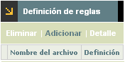
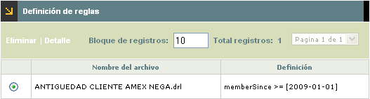
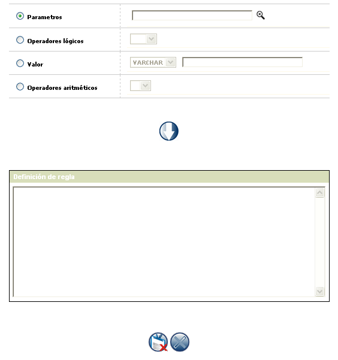
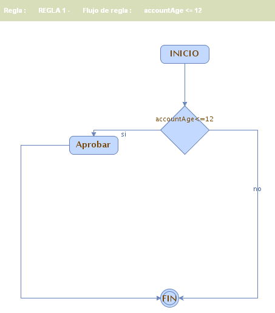
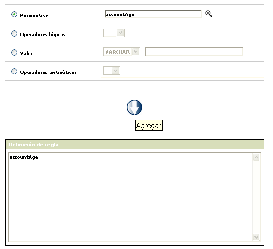
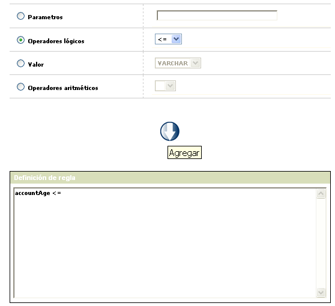
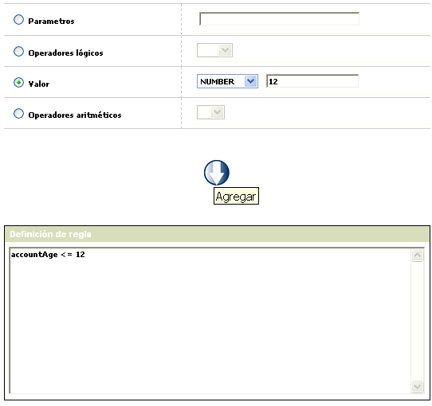
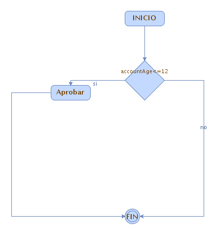

Definición de reglas
Mediante este hipervínculo que se invoca desde el formulario principal de reglas, la entidad configura la conformación o estructura de la regla que debe ser evaluada por el autorizador y poder determinar si la tarjeta cumple o no con la misma.
Cada regla solo puede tener una única definición, por lo cual las opciones Eliminar, Adicionar y Detalle solo se mostrarán cuando el formulario no contenga datos.
Si ya existe una definición para la regla, solo estárán disponibles las opciones Eliminar y Detalle


Adicionar: Si el actor invoca la opción Adicionar se despliega un nuevo formulario con los siguientes campos:

|
Parámetros |
Campo con lista de valores del cual se selecciona una a una las variables a utilizar para la configuración de la regla. |
|
Operadores lógicos |
Este campo tipo combo, permite seleccionar el operador lógico a utilizar para la configuración de la regla y que puede ser: < (menor que), > (mayor que), <= (menor o igual que), >= (mayor o igual que), <> (diferente de), = (igual), Not (no), And (y), Or (o), '(' (abrir paréntesis), ' )' (cerrar paréntesis) |
|
Valor |
Campo que se encuentra precedido de un combo con las opciones VARCHAR, NUMBER o DATE y donde el actor debe indicar de acuerdo con el parámetro seleccionado el tipo de dato al que corresponde el valor ingresado en el campo anexo. El campo admite cualquier dato alfanumérico de hasta 30 caracteres. Al momento de salvar el registro el sistema validará si el tipo de dato indicado por el actor es coherente con la información del parámetro con el que está relacionado. Es importante tener en cuenta que si el tipo de dato indicado es DATE el valor se debe ingresar en formato YYYY-MM-DD. |
|
Operadores aritméticos |
Este campo tipo combo, permite seleccionar el operador matemático a utilizar para la configuración de la regla y que puede ser: + (mas), - (menos), * (multiplicado por), / (dividido entre) |
|
Definición de regla |
Campo o área de trabajo en la cual se van mostrando los parámetros, operadores lógicos, matemáticos y valores utilizados para configurar la regla en el mismo orden en el que fueron adicionados por el actor. |
Los campos parámetros, operadores lógicos, valor y operadores matemáticos van precedidos de un radio button en el cual el actor debe marcar cual de ellos desea utilizar; una vez que el actor selecciona alguno de ellos el campo se habilita quedando los demás deshabilitados. Por defecto, al ingresar al formulario siempre entra marcado y habilitado el campo Parámetros.
Además de los botones salvar y cancelar, el formulario contiene tres botones especiales que son los que permiten configurar las reglas: Agregar, Deshacer y Borrar todo
Detalle: si el actor invoca la opción Detalle se despliega un nuevo formulario en el cual se muestra la sintaxis o estructura de la regla y el diagrama de flujo de la misma.

PROCEDIMIENTO PARA ADICIONAR LOS DATOS Y CONFIGURAR LA REGLA : para configurar la estructura de la regla, el actor debe seleccionar y agregar uno a uno los parámetros, operadores lógicos, valor y operadores matemáticos que vaya a utilizar, teniendo en cuenta el orden en el cual son agregados.
Previo al proceso de definición de las reglas es aconsejable y muy útil que se tenga definido en un excel u otro tipo de documento la sintaxis o argumentos que conforman la regla.
Para adicionar cualquiera de los elementos de la regla, el actor primero debe marcar el radio button asociado con el tipo de elemento que desea utilizar, luego seleccionar o ingresar el valor del mismo y por último debe utilizar el botón especial 'Agregar'. Una vez que el actor agregue cada parámetro, operador lógico, valor u operador matemático estos se deben mostrar en el campo 'Definición de regla' como se muestra a continuación.
Para agregar un parámetro:

Para agregar un operador lógico:

Para agregar un valor:

Cuando se adicione un 'Valor' dependiendo del tipo de dato indicado por el actor el sistema lo mostrará de la siguiente manera:
Si es un VARCHAR lo mostrará encerrado entre comillas sencillas 'abc'
Si es un DATE lo mostrará encerrado entre paréntesis cuadrados [2009-03-01]
Si es un NUMBER lo mostrará sin ningún tipo de marca adicional
Una vez que el actor ha agregado todos los parámetros, operadores lógicos, valor y operadores matemáticos que definen la configuración de la regla, mediante el botón salvar el sistema valida la síntaxis de la misma y si es correcta muestra el diagrama de flujo respectivo.

Si durante la configuración de la regla el actor se equivoca o decide modificar cualquiera de los datos ingresados debe utilizar los botones Deshacer y Borrar todo. Deshacer va eliminando uno a uno los diferentes datos agregados, mientras que borrar todo los elimina completamente dejando el formulario en blanco para que el actor pueda comenzar nuevamente.
Botones especiales
Deshacer: botón que permite eliminar uno a uno los diferentes componentes agregados a la regla, iniciando por el último.